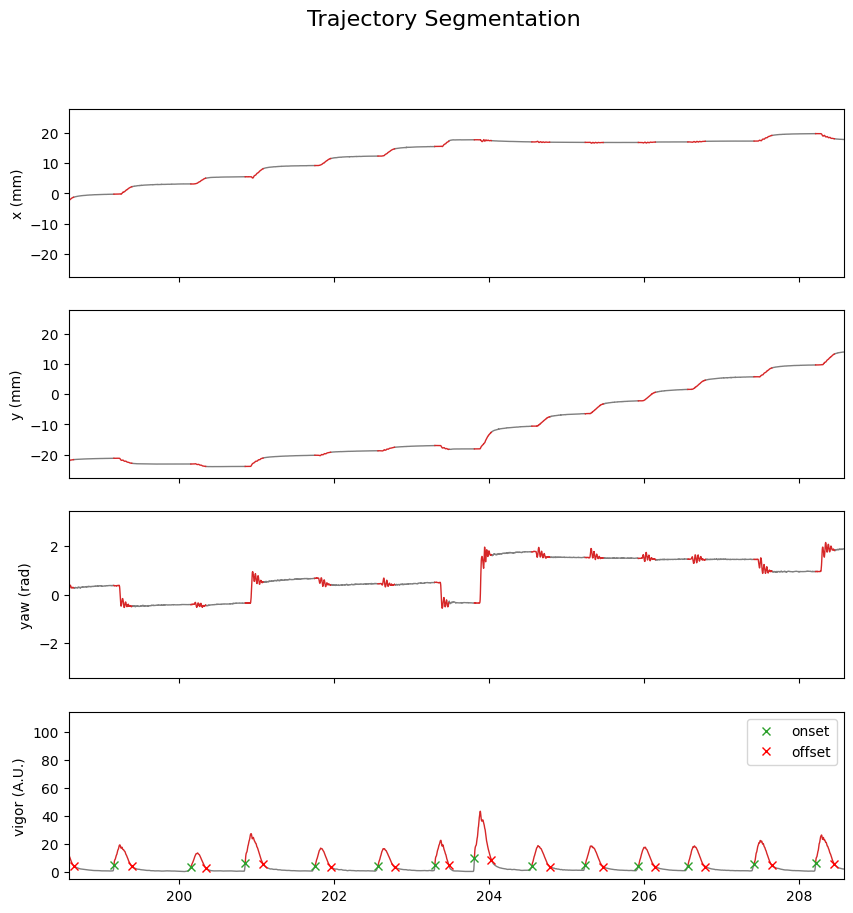
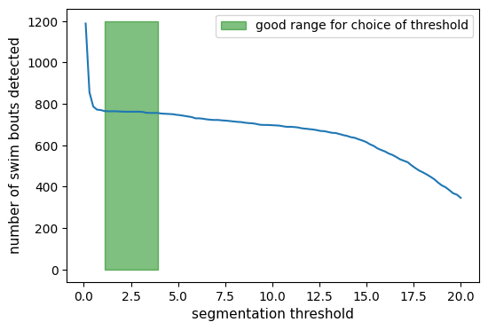

Trajectory Segmentation#
The following notebook illustrate the TrajSegmentation class.
Loading dependencies
import numpy as np
import matplotlib.pyplot as plt
from megabouts.tracking_data import TrackingConfig, load_example_data, FullTrackingData
from megabouts.config import TrajPreprocessingConfig, TrajSegmentationConfig
from megabouts.preprocessing import TrajPreprocessing
from megabouts.segmentation import Segmentation
Loading Data and Preprocessing#
TrackingConfig and TrackingData similar to tutorial_Tail_Preprocessing
df_recording, fps, mm_per_unit = load_example_data("fulltracking_posture")
tracking_cfg = TrackingConfig(fps=fps, tracking="full_tracking")
head_x = df_recording["head_x"].values * mm_per_unit
head_y = df_recording["head_y"].values * mm_per_unit
head_yaw = df_recording["head_angle"].values
tail_angle = df_recording.filter(like="tail_angle").values
tracking_data = FullTrackingData.from_posture(
head_x=head_x, head_y=head_y, head_yaw=head_yaw, tail_angle=tail_angle
)
t = np.arange(tracking_data.T) / tracking_cfg.fps
traj_preprocessing_cfg = TrajPreprocessingConfig(fps=tracking_cfg.fps)
traj_df_input = tracking_data.traj_df
traj = TrajPreprocessing(traj_preprocessing_cfg).preprocess_traj_df(traj_df_input)
Segmentation using kinematic vigor#
Set the threshold to 0.5:
traj_segmentation_cfg = TrajSegmentationConfig(fps=tracking_cfg.fps, peak_prominence=1)
Apply segmentation to
traj.vigor:
segmentation_function = Segmentation.from_config(traj_segmentation_cfg)
segments = segmentation_function.segment(traj.vigor)
We can visualize the results of the segmentation:
Show code cell source
is_bouts = np.zeros(tracking_data.T, dtype=bool)
# Set to True for the indices within the bouts
for on_, off_ in zip(segments.onset, segments.offset):
is_bouts[on_:off_] = True
IdSt = 139000
Duration = 10 * tracking_cfg.fps
fig, ax = plt.subplots(4, 1, figsize=(10, 10), sharex=True)
fig.suptitle("Trajectory Segmentation", fontsize=16)
traj_list = [
tracking_data._head_x,
tracking_data._head_y,
tracking_data._head_yaw,
traj.vigor,
]
traj_name = ["x (mm)", "y (mm)", "yaw (rad)", "vigor (A.U.)"]
for i, (x, label_) in enumerate(zip(traj_list, traj_name)):
x_bouts = np.where(is_bouts, x, np.nan)
x_nobouts = np.where(~is_bouts, x, np.nan)
ax[i].plot(t, x_nobouts, "tab:gray", lw=1)
ax[i].plot(t, x_bouts, "tab:red", lw=1)
ax[i].set(ylabel=label_)
if i == 3:
ax[i].plot(
t[segments.onset], x[segments.onset], "x", color="tab:green", label="onset"
)
ax[i].plot(
t[segments.offset], x[segments.offset], "x", color="red", label="offset"
)
ax[i].legend()
t = np.arange(tracking_data.T) / tracking_cfg.fps
ax[1].set_xlim(t[IdSt], t[IdSt + Duration])
plt.savefig("traj_segmentation.svg")
plt.show()

To find the ideal segmentation threshold for your dataset, it is useful to compute the number of bouts detected as a function of the threshold:
# Number of bouts as function of threshold:
thresh_list = np.linspace(0.1, 20, 100)
num_bouts = np.zeros_like(thresh_list)
for i, thresh in enumerate(thresh_list):
traj_segmentation_cfg = TrajSegmentationConfig(
fps=tracking_cfg.fps, peak_prominence=thresh
)
segmentation_function = Segmentation.from_config(traj_segmentation_cfg)
segments = segmentation_function.segment(traj.vigor)
num_bouts[i] = len(segments.onset)
For very small threshold values, too many bouts are detected, while for large threshold values, no bouts are detected. There is an optimal range between these extremes where a suitable threshold can be found:
Show code cell source
fig, ax = plt.subplots(figsize=(6, 4))
ax.plot(thresh_list, num_bouts)
ax.fill_between(
thresh_list,
0,
1200,
where=(num_bouts < 767) & (num_bouts > 755),
color="green",
alpha=0.5,
label="good range for choice of threshold",
)
ax.legend()
ax.set_ylabel("number of swim bouts detected", fontsize=11)
ax.set_xlabel("segmentation threshold", fontsize=11)
plt.show()
